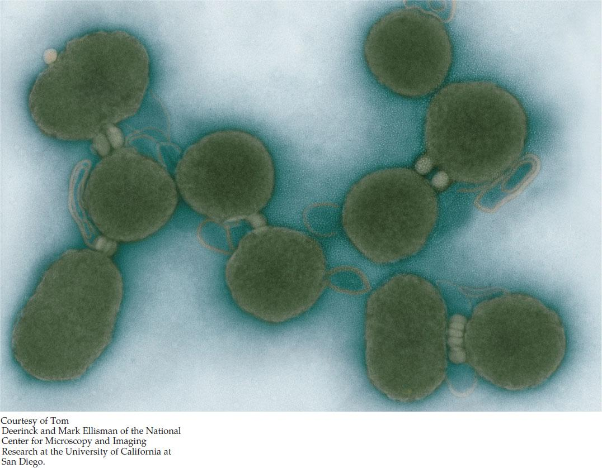

| 4 | Cells: The Working Units of Life |
|
KEY CONCEPTS
4.1 Cells Provide Compartments for Biochemical Reactions 4.2 Prokaryotic Cells Do Not Have a Nucleus 4.3 Eukaryotic Cells Have a Nucleus and Other Membrane-Bound Compartments 4.4 The Cytoskeleton Provides Strength and Movement 4.5 Extracellular Structures Provide Support and Protection for Cells and Tissues |

Cells of Mycoplasma mycoides JCVI-syn1.0. These are the first synthetic cells.
|
In 1818, a 21-year-old London writer, Mary Shelley, published a novel that shocked a society in the midst of the Industrial Revolution. In Shelley’s story, Dr. Victor Frankenstein discovers how to use electricity to reanimate dead creatures. Collecting body parts from graves and medical labs, the fictional doctor assembles them into a huge 8-foot-tall body and uses his secret method to bring it to life. The results are disastrous, and the novel became a cautionary tale about the limits of science.
Almost 200 years later, in 2010, biologists Craig Venter and Hamilton Smith also gave new life to an “empty shell.” In this case, the “shell” was a cell of the tiny bacterium Mycoplasma capricolum. into which the scientists inserted a complete new set of genetic material, bringing a new organism to life. The scientists used a computer to design an artificial DNA sequence that had all the genes necessary for bacterial life, plus some unique sequences. Then they went into the chemistry lab and made the DNA from individual nucleotides. They inserted this synthetic genome (similar to the genome of the closely related bacterium Mycoplasma mycoides) into the host bacterium, where it replaced the host bacterium’s normal DNA. The new DNA directed the cell to perform all the biochemical characteristics of life, including cell reproduction. Eventually, all of the cell’s original proteins and RNAs were replaced with proteins and RNAs encoded by the new genome. Since the new genome had some distinctive DNA sequences devised by the scientists, these experiments resulted in an entirely new organism, called Mycoplasma mycoides JCVI-syn1.0.
Why did Venter and Smith need to start with a preexisting cell? The chemical reactions of life (metabolism, polymerization, and replication) cannot occur in a dilute aqueous environment; it would be too unlikely for reactants and enzymes to collide with one another. Life requires compartments that bring together and concentrate the molecules involved in these events, which ultimately are directed by the DNA genome.
After about 30 cell divisions, the cells of the new organism no longer had any of the original cell’s proteins or small molecules. The cells had used substances in the environment to synthesize their own small and large molecules. They were truly individuals of a new organism, whose “parent” was a synthetic DNA molecule!
The practical aim of this research is to create cells with new capabilities, such as synthesizing clean-burning fuels. But it also puts cells into broader focus as the basic units of biological structure and function.
What do the characteristics of modern cells indicate about how the first cells originated?